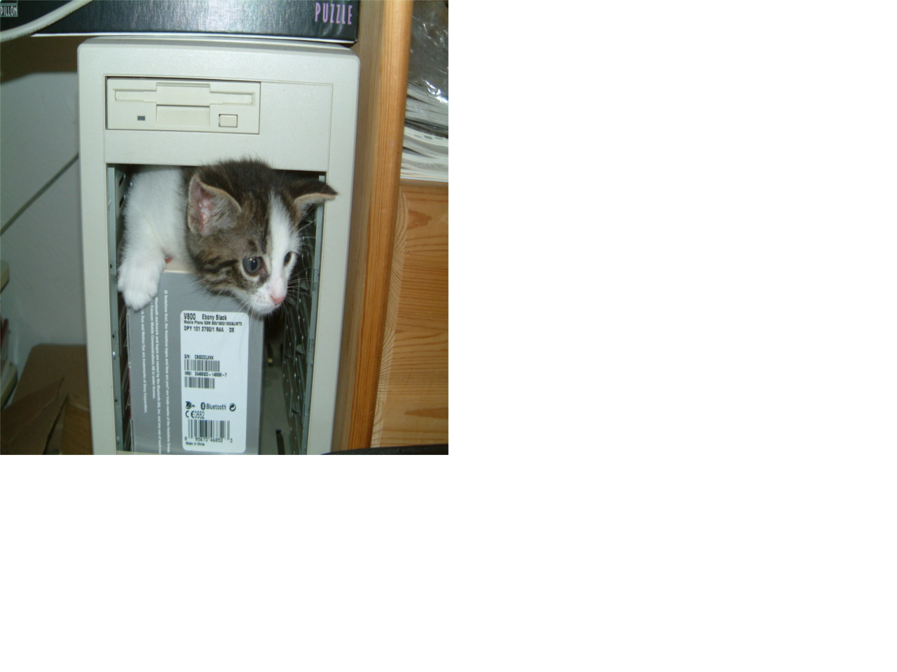

Let's make a website!
Here's a nifty subtitle
Here's some text wrapped in paragraph tags. Text is great.
Some text. Aha.
- List Item One
- List Item Two
- List Item Three
- List Item Four
- List Item Five
Child One
Just a random span- unordered list item one
- unordered list item two
- ordered list item one
- ordered list item two
- unordered list item three
"Moby Dick?" shouted Ahab. "Do ye know the white whale then, Tash?"
"Does he fan-tail a little curious, sir, before he goes down?" said the Gay-Header deliberately.
"And has he a curious spout, too," said Daggoo, "very bushy, even for a parmacetty, and mighty quick, Captain Ahab?"
She gazed at me with troubled eyes, long and questioningly. That it was difficult to believe my statement I well knew, nor could I hope that she would do so however much I craved her confidence and respect. I would much rather not have told her anything of my antecedents, but no man could look into the depth of those eyes and refuse her slightest behest.
